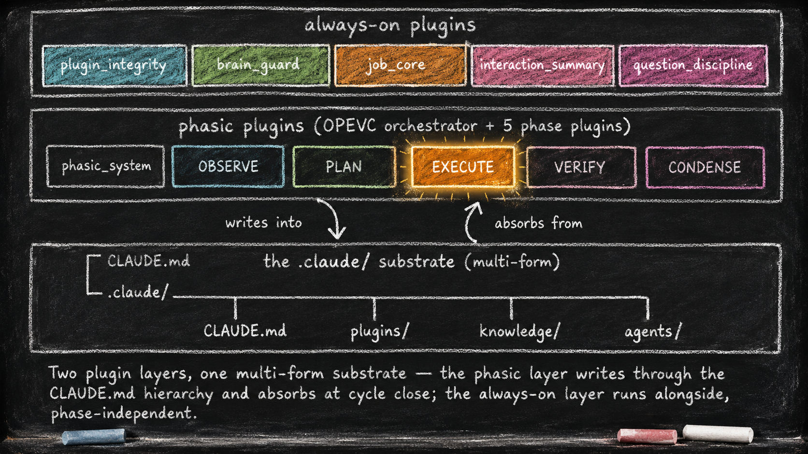

The Two-Layer Foundation
# The Two-Layer Foundation
Essay 5.1 of 9 — The Always-On Digital Cortex. Hadosh Academy series on agent architecture. Essay 5 opens here; Essays 5.1 through 5.8 follow.
Now we open .claude/.
In Essay 2, we argued the LLM is the token generator and the agent is everything we build around it — the system that metabolizes those generated tokens into durable forms of memory so the seed agent can form a coherent, stable identity across sessions. Inside .claude/ is where that metabolism happens. Two compartments are canonical: knowledge/ holds long-term memory the agent reaches for during active recall, and plugins/ holds procedural memory — the hooks, scripts, and tests that enact discipline rather than describe it.
Other compartments carry their own forms. Auto-recall coaching lives in each plugin’s voice.xml. Narrative memory lives in each plugin’s evolution.md. Cross-session preferences live in memory/. And many more we will meet across this series. ⓘ
The deeper move is representing different forms of cognition as different forms of memory, so the seed agent always carries the optimum context for what it is currently doing. As you customize your own seed agent, you will invent compartments that fit your work, your roles, your professional context.
The chat session is the one place memory does not live by design. Chat context is capped by the model’s window and survives compaction only as a lossy summary. The rest of .claude/ is what makes the agent durable.
In this prototype, long before the model runs out of room, the seed agent forces a self-compaction — the conversation is summarized, most discarded, the rest rebuilt from a smaller context. The plugin that runs this — brain_guard — gets its own deep-dive later in this series. But the files inside .claude/ sit on disk untouched; they are still there when the new context starts. ⓘ
The pattern generalizes. The interlude put it directly: any folder with a .claude/ becomes a seed agent — brain inside, work in siblings. The brain holds many forms of memory through many plugins, and this essay tours the ones this prototype ships, with hints toward the ones you will invent.
Start with the most visible. The seed agent’s working memory — what it is currently doing or experiencing — lives in a hierarchy of plain Markdown files (CLAUDE.md files) at known locations on disk. Two plugin layers run on top of this hierarchy. The phasic layer writes each cycle’s experiential data into it; the always-on layer runs alongside, mostly orthogonal to it.
Plugins are the procedural form: directories under .claude/plugins/ that each bundle the hooks, scripts, and tests for one concern. Essay 4 introduced the vocabulary — hook, plugin, voice, agent — that this essay turns into a concrete file layout you can navigate. The plugins split into two categories. The always-on plugins are active all the time, shaping how the seed agent operates no matter what it is currently doing. The phasic plugins manage what we will call the markov brain — they actively control the seed agent’s behavior while it is operating inside a particular phase. We open the markov brain in Essay 6.
Two Categories, One Substrate
The always-on layer is active all the time and runs on every prompt, every tool call, every session start, regardless of which job the seed agent is currently working on. This layer owns infrastructure: locking plugins for updates, context budgets, job structure, conversation discipline. The current prototype ships five always-on plugins (plugin_integrity, brain_guard, job_core, interaction_summary, question_discipline). The category is the load-bearing thing — not the count. A custom seed could add a sixth or a seventh and the architecture wouldn’t shift. ⓘ
That’s one layer. The other rotates.
The phasic layer activates one plugin at a time, dictated by which phase the active job is in. It currently implements a cognitive cycle called OPEVC — observe, plan, execute, verify, condense (five phases in the prototype) — plus an orchestrator (phasic_system) that tracks where each job sits in that cycle. The cycle can be extended as users customize their seed agent and grow its markov brain.
Each phase makes a different set of tools available to the seed agent: OBSERVE and PLAN are read-only against project files, EXECUTE writes inside a fenced scope, VERIFY runs scripts only, and CONDENSE writes inside .claude/ only, absorbing the recent experiential data from previous phases. ⓘ We open the phasic layer in Essay 6.
Two layers. One multi-form substrate underneath.
The substrate is .claude/ itself — the multi-form memory directory the opener introduced. Each form serves a different concern, and each is used by different machinery. The difference between the two plugin layers is not which substrate forms they touch — that varies plugin by plugin — but their relationship to phase. The always-on layer runs continuously, each plugin owning one concern and its own private state.
The phasic layer activates one plugin at a time, dictated by the active job’s current phase, and uses the CLAUDE.md hierarchy specifically as its working medium — writing into footers during each cycle, then absorbing the durable parts upward into bodies, sideways into knowledge files, and into voice files, subagent definitions, and other forms of memory at the end. ⓘ

Why "Single Concern" Matters
Each always-on plugin owns exactly one concern.
plugin_integrity owns plugin edit safety. brain_guard owns self-compaction. job_core owns the job lifecycle. interaction_summary keeps a focused job’s mega-prompt legible as it grows. question_discipline owns the asking gate. Each plugin lives in its own folder under .claude/plugins/<name>/ with its own hooks, scripts, hidden state, tests, and voice files. Naming the concern is easy because each plugin only has one to name. ⓘ
The single-concern principle is a minimize rule, not an eliminate rule. Pure isolation is what a traditional library aims for — clean modules with no shared state, talking to nothing they don’t import. The seed agent is a complex cognitive system, and a small amount of structured coupling between plugins is what lets the parts compose into ceremonies larger than any one plugin. Call this single-concern + careful coupling: each part stays narrow; the composition is what makes the ceremony possible. ⓘ
The historian ratchet inside plugin_integrity is a clean example — it blocks plugin editing when the plugin’s evolution narrative has fallen behind, and to do that it depends on question_discipline registering the [PLUGIN-LOCK] prefix, on job_core capturing the user’s approval answer, and on the safe-lock cycle protecting the plugin during the edit. Three plugins compose into one ceremony, each contributing what it owns. We deconstruct this composition in Part 8 of this essay.
The discipline is in how the coupling happens. When plugins talk to each other, they talk through public, stable interfaces — small command-line surfaces each plugin publishes (one read-only command per concern, job.sh focused being the canonical example), a registry of question prefixes, named voice handles, and the footer marker protocol that organizes the bus. A plugin reads what another plugin chooses to publish; it never reaches into another plugin’s private state. Each plugin’s internal data stays private; only the interface is shared. ⓘ
The shape buys three concrete things. Plugins evolve independently — a change inside interaction_summary cannot break job_core as long as the read-only job.sh API stays the same. Plugins are testable in isolation — each tests/ directory exercises one plugin’s behavior without standing up the entire seed. Plugins are addable — a sixth always-on plugin slots into the architecture by exposing its own public commands, not by rewiring anyone else’s. ⓘ
The journey ahead
The foundation is in place: two layers above one substrate, each plugin owning one narrow concern, public interfaces wiring the ceremony. Essay 5 splits into nine short sub-essays — five plugin tours plus three deep-dives (substrate, composed ceremony, customization guardrail) plus this foundation:
- Essay 5.1 — The Two-Layer Foundation (you are here) — two plugin categories above one substrate
- Essay 5.2 — Plugin Edit Safety —
plugin_integrityand the test gate - Essay 5.3 — Context Window Discipline —
brain_guardand the progressive squeeze - Essay 5.4 — Job Lifecycle —
job_coreand the unit of compartmentalization - Essay 5.5 — Cross-Session Memory —
interaction_summaryand the dynamic mega-prompt - Essay 5.6 — Structured Questions —
question_disciplineand the prefix registry - Essay 5.7 — The CLAUDE.md Hierarchy — working memory, four-footer protocol, altered list
- Essay 5.8 — The Historian Ratchet — composed ceremony from three single-concern plugins
- Essay 5.9 — The Customization Guardrail — the gate that decides when substrate edits are admitted
Each sub-essay covers what its plugin (or mechanism) owns, how it works, what would break without it, and what you would customize when you cultivate your own seed.
Essay 8 — From Apprentice to Architect closes the series by showing the four-stage maturation arc — how each form of work this prototype hosts grows from a single-cycle conversation into a customized plugin in your own seed. The promises this essay plants — extendable always-on layer, extendable cognitive cycle, more memory forms you will invent — are paid off there.
We start with plugin_integrity.
Essay 5.1 of 9 — The Always-On Digital Cortex — Hadosh Academy series on agent architecture.
Previous: Essay 4 — The Language of Agents — vocabulary that prepares the architecture. Next: Essay 5.2 — Plugin Edit Safety (plugin_integrity) — first of the always-on plugin deep-dives.
Comments